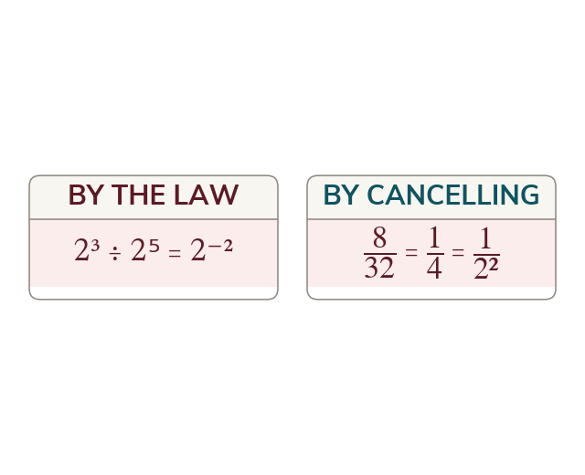

Where a negative index comes from
The division law turns 2³ ÷ 2⁵ into 2⁻². Cancelling gives 12², so 2⁻² means 12².
Working out 2³ ÷ 2⁵ by the division law gives 2⁻², but cancelling the factors gives 1 over 2². Both are right, so 2⁻² has to mean 12², the reciprocal of 2².